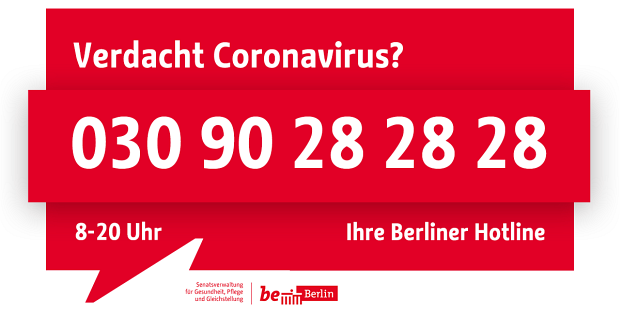
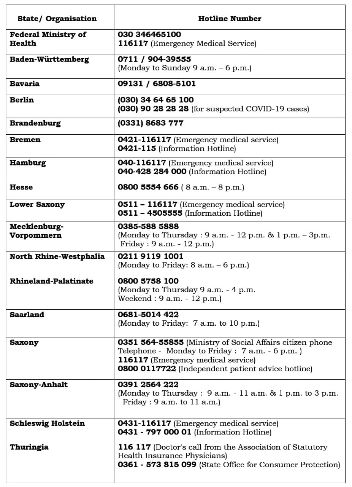

-
Due to the pandemic spread of the disease COVID -19 by the pathogen SARS- CoV-2 ("Corona Virus"), the operations in the State Office for Immigration ( LEA ) are considerably restricted until further notice. Source: https://www.berlin.de/einwanderung/
-
EU leaders agree to implement a 30-day travel ban on those traveling from outside the EU, with a limited number of exceptions.
-
Germany implements non-EU travel ban
-
Current information about the situation in Berlin, visit :
www.visitberlin.de
-
Servcie Restrictions in Berlin :
More Details
nCovid-19 Report in Berlin - 03/17/2020
Source

nCovid-19 Germany Live Tracker
Berlin Hotline (Coronavirus): (030) 9028-2828

General and Daily Situation Report from RKI
Hotline numbers in Germany
